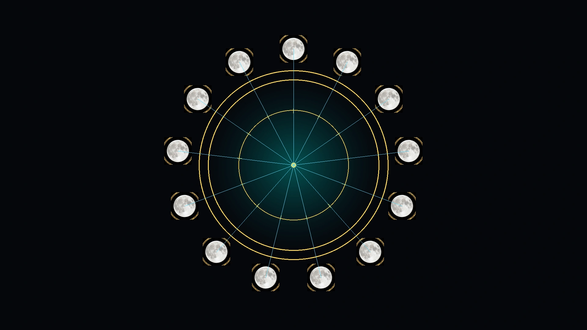

Sky Body
Visible Moon Phase
—

Remnant Calendar Engine
Remnant 13 Moons · Living Calendar
A living 13×28 symbolic calendar for moon phase, Shabbat rhythm, prophetic mirror reading, astrology, planetary alignments, daily witness, Earth Hum tags, pattern detection, Codex seals, solar gates, body signal, dreams, weather, memory, and coherence practice.
Today
Calendar
Witness
Mirror
More
☲ Living Calendar Today ☲
—
—
Current Remnant Moon
—
—
Timezone, date, boundary mode, manual sunset, location lookup, and share controls stay here without changing calendar behavior.
Sky Body
—
Day Archetype
—
Week Gate
—
Sky Mirror
—
שבת · Ceasing · Rest · Restoration
Shabbat means ceasing from ordinary labor so time can be set apart for rest, worship, family, meals, reflection, restoration, and peace.
Stop forcing. Guard the household. Review the witness. Let scattered things return to order.
שבת שלום · Shabbat Shalom
Shabbat is not merely a Saturday label. It is the deliberate stopping of ordinary labor so the household, body, memory, worship, relationship, and witness can return to order.
Preparation Gate
Friday before sunset: finish necessary work, settle responsibilities, prepare food and space, and decide what should not be carried into the rest period.
Shabbat Gate
Friday sunset through Saturday nightfall: cease ordinary production, protect the household, share food, pray, rest, review, and record without forcing an outcome.
Return Gate
Saturday nightfall: separate rest from the returning work cycle, preserve the lesson, and re-enter action with one deliberate next step.
Why It Fits the 13 Moons
Each Remnant Moon contains exactly four seven-day weeks. When Moon Day 1 begins on Friday, Shabbat occupies Moon Days 2, 9, 16, and 23 every moon. The date positions remain stable because 28 divides evenly into four weeks.
Year Gate Rule
The 364 counted days equal exactly 52 weeks. Any outside or intercalary Year Gate must keep the continuous weekly count moving. The new 13-Moon year should not artificially restart the weekday cycle, or the Shabbat alignment will eventually break.
Codex Stop Rule
☲ Daily Ritual Dashboard ☲
Begin with the day. Notice the signal. Record the witness. Let repeated patterns become the mirror.
✦ Field Meters
The flow gathers the day into five gates: coherence, body, signal, field, and grounding.
Daily Practice
Pattern Memory
Saved logs can be read across 3, 7, 14, and 28 day windows.
Save witness logs to reveal repeated words and themes.
Track sleep, pressure, clarity, tension, hunger, and energy.
Watch weather, tech, animals, numbers, and timing across days.
☲ Prophetic Mirror Engine
The mirror gathers moon, day, Shabbat state, solar gate, visible phase, field, and witness into one reading.
Today’s Reading
Choose a focus and build the mirror reading.
Threefold Counsel
The day’s first witness appears here.
The pressure gate appears here.
The clean action appears here.
☲ Daily Witness
Fill it out, generate the witness, copy it, or save it locally.
Your daily witness will appear here.
☉ Sky Mirror
A symbolic mirror for season, element, body, emotion, speech, timing, planetary alignments, and witness.
Solar Gate
Body, provision, land, stability, and what must be made real.
Moon Mirror
Emotion, memory, dreams, family signal, and inner weather.
Daily Counsel
Observe first. Interpret after the pattern repeats.
Element Mirror
Elemental reading appears here.
Body House
Body and practical focus appears here.
Integration
Let the sky become a mirror, then let the body choose the grounded step.
✦ Planetary Alignment Mirror
A planetary wheel for the selected effective date, ready for a real ephemeris override when connected.
Planetary Placements
Aspect Mirror
Fixed 4 weeks × 7 days. With Sunset Boundary active, each Remnant day begins at sunset rather than midnight.
Shows how each civil date maps into the Remnant count. After sunset, the effective Remnant date advances.
The counted year contains 13 Moons × 28 days = 364 days = 52 complete weeks. The anchor and any outside Year Gate must preserve the continuous seven-day cycle.
—
| Moon | Name | Essence | Element | Frequency | Start | End | Practice |
|---|---|---|---|---|---|---|---|
| Calculating… | |||||||
Codex Day Seal
Witness Prompt
Compares saved logs across 3, 7, 14, and 28 day windows.
✦ Today’s Field Card
Notice the body, check the sky, mark the field, then wait for repeated patterns across multiple days.
Sleep, pressure, hunger, calm, tension, energy, clarity.
Dreams, memory, repeated words, focus, emotional weather.
Moon phase, Kp status, weather, tech glitches, animal behavior, timing.
Record first. Interpret after multiple days show the same pattern.
⊕ Earth Hum · Schumann Field
This page does not fetch live Kp data. Check an outside source, tag the day manually, then compare it against saved witness logs.
Baseline Bell
Earth-ionosphere resonance. Treat as context, not command.
Quiet Field
Normal log day. Record mood, sleep, dreams, focus, and moon correspondence.
Charged Field
Mark the day elevated. Watch sensitivity, restlessness, pressure, or unusual clarity.
Storm Field
Use grounding. Reduce overload. Log patterns for 2–4 days after the peak.
Saved in this browser only using localStorage.
Copy all saved logs, export JSON, import JSON, or clear the local archive.
Installation & Recovery
Updates and refreshed app files preserve saved records. Reinstall only as a recovery step.
Refresh App Files verifies and activates a fresh service worker before reloading. Previous recovery files remain available until the refreshed app starts successfully. It does not delete logs or settings.
Records, settings, imported backups, and optional location stay in this browser. Witness text, readings, notes, precise location, and backups are not sent to analytics. Location is optional and is used only to calculate sunset; manual sunset works without it.
Import validates the backup, reports record counts, and creates a local rollback backup before making changes.
Removing the icon may not erase Safari website storage. Clearing app files is different from deleting logs.
Destructive: removes only 13 Moons-owned settings, logs, witness entries, mirror entries, patterns, and local backups. Export important records first.
Installable Living Calendar
Installation adds a Home Screen icon, opens the calendar without the normal browser bar where supported, and prepares essential files for offline use. Your records remain on this device.
Checking installation support…
Waiting for browser install state…
To install 13 Moons on iPhone, open this page in Safari first. Use the browser menu to open the page in Safari, then return here.